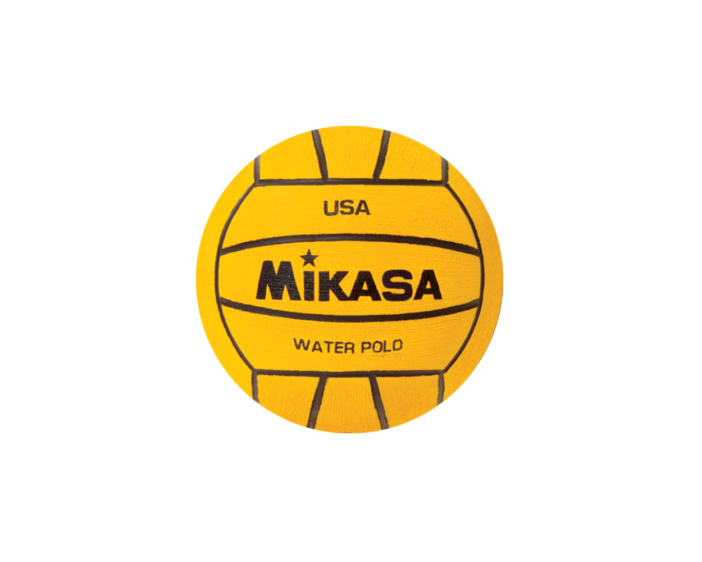
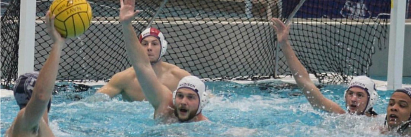

Pracitce
We practice in the UREC pool, in the deep end. Our practices our lead by our vice president CJ Reed, and last
for about two hours.
Depending on if it is our competative season which is the fall semester we practice 3 to 4 times a week. While
in our off season, which is the spring semester,
we only practice 2-3 times a week depending on if we have a scrimage tournament that month. Our practices are
usually divided into three fourty-five minute sections.
With the first fourty-five minute section is conditioning, with swim sets and warmups. The second sections is
focused on drills and treading exercise, such as passing, cutting and
weighted tread sets. The last fourty-five minute section is normally used for in game practice and walk throughs
to get people more comfortable playing water polo and experiance
game like conditions. We always recommend for new and experianced players to watch videos on proper form and
technique for learning to advance you water polo game, a good channel
to watch and study from can be found here.

